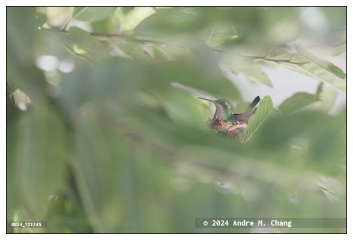

Home /
Blog / Post
Photo Essay | Published: August 24, 2024 | Updated: August 24, 2024
Glittering-bellied Emerald Daily Life

A female glittering-bellied emerald (Chlorostilbon lucidus) hummingbird sits on its nest as it incubates eggs, on the branch of a sugar-apple (Annona squamosa) tree in a backyard garden, in Asuncion, Paraguay. (Credit Image: © Andre M. Chang)

A glittering-bellied emerald (Chlorostilbon lucidus) hummingbird nest built in the branch of a sugar-apple (Annona squamosa) tree, is seen in a backyard garden, in Asuncion, Paraguay. (Credit Image: © Andre M. Chang)

A glittering-bellied emerald (Chlorostilbon lucidus) hummingbird nest built in the branch of a sugar-apple (Annona squamosa) tree with two tiny white eggs, is seen in a backyard garden, in Asuncion, Paraguay. (Credit Image: © Andre M. Chang)
Photos and Captions | September 12, 2024 | Updated: September 12, 2024
Glittering-bellied Emerald Daily Life

A female glittering-bellied emerald (Chlorostilbon lucidus) hummingbird sits on its nest to keep it warm, on the branch of a sugar-apple (Annona squamosa) tree in a backyard garden, in Asuncion, Paraguay. (Credit Image: © Andre M. Chang)
A featherless newborn glittering-bellied emerald (Chlorostilbon lucidus) hummingbird chick still in the nest, on the branch of a sugar-apple (Annona squamosa) tree, is seen in a backyard garden, in Asuncion, Paraguay. (Credit Image: © Andre M. Chang)